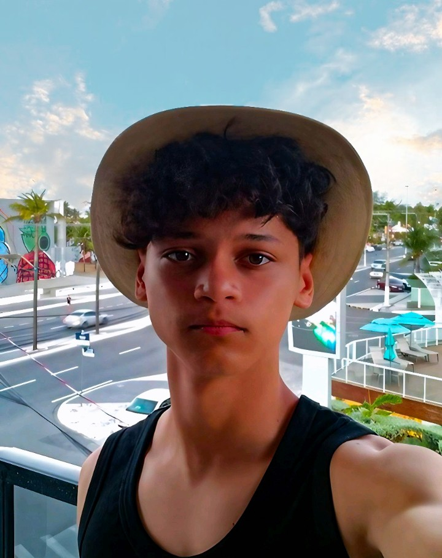

Sobre Mim

Sou Arthur Macaúbas, estudante do ensino médio integrado ao técnico de informática no IFRO campus Vilhena. Apaixonado por tecnologia desde jovem, sou em parte autodidata e estou aprendendo HTML, CSS, JavaScript, Python e C++. Meus projetos, como VanillaCore e o Nações Sob Fogo, refletem minha vontade de criar e resolver problemas com código.
Meu objetivo é me tornar um desenvolvedor full-stack, explorando frameworks como React e construindo interfaces acessíveis e criativas. No tempo livre, gosto de trabalhar com Arduino e modelagem 3D no Tinkercad.
Habilidades
- Python
- HTML5
- CSS3
- JavaScript (básico)
- C++ (básico)
- Arduino
- Fritzing
- Tinkercad
- Modelagem 3D
Conquistas
- Certificado em Informática Básica
- Certificado em Operador de Computador
- Em andamento: Curso FIC de Indústria 4.0
- Trabalho em equipe no projeto VanillaCore (GelatoItali fictícia)
Linha do Tempo
- 2022: Comecei a aprender desenvolvimento web com HTML e CSS
- 2023: Criei meu primeiro site, Nações Sob Fogo
- 2024: Desenvolvi o Repositório do Macaúbas e projetos com Arduino
- 2025: Participei do projeto VanillaCore em equipe
Contato
Colabore comigo! Entre em contato para projetos ou ideias.